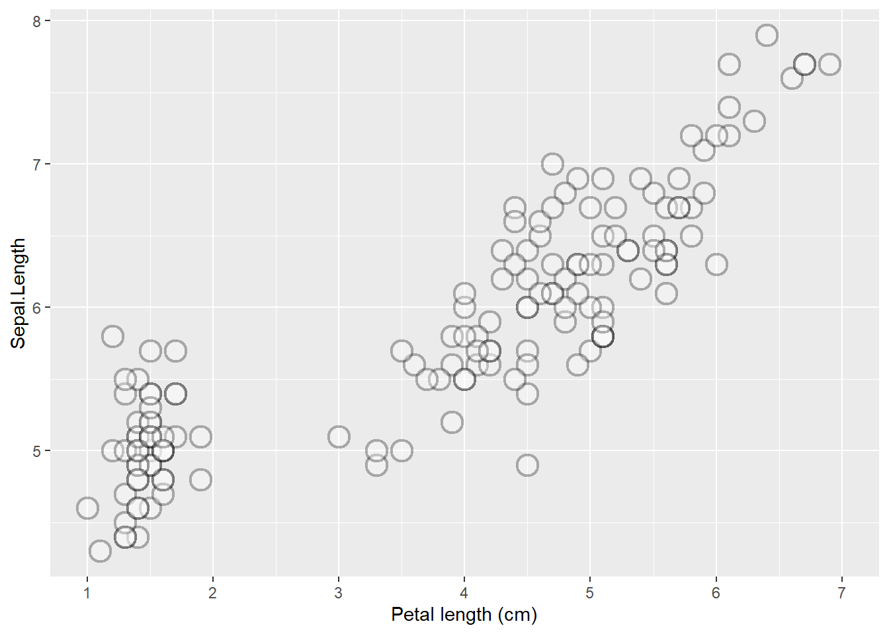
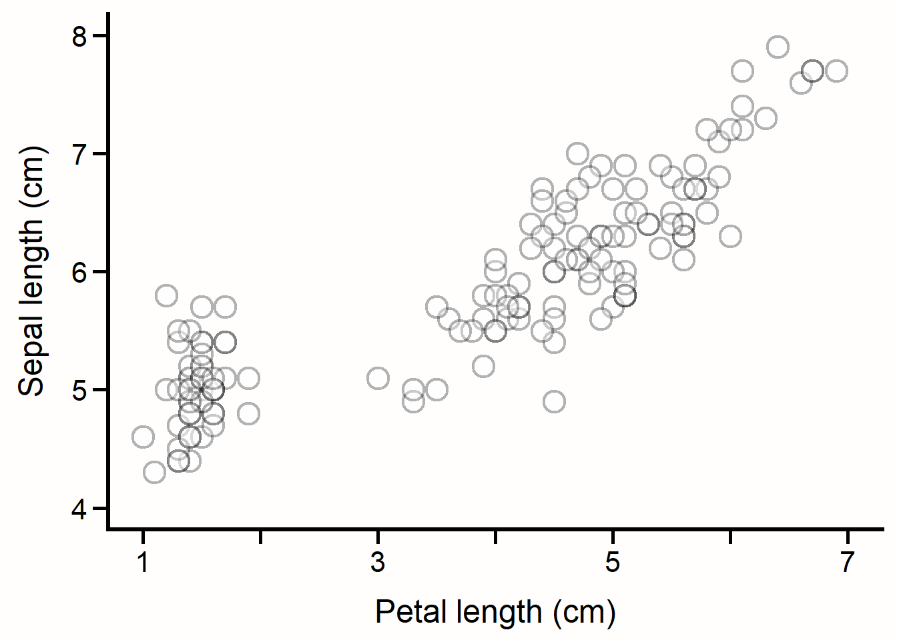
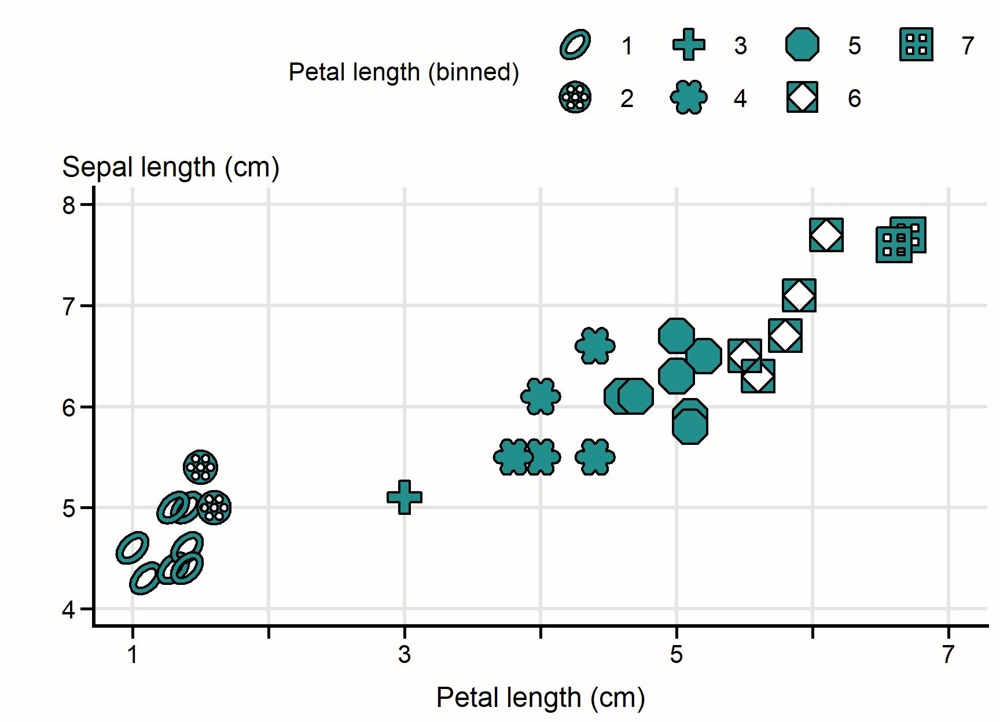

# install.packages("devtools") # if not already installed
devtools::install_github("https://github.com/MAISRC/ggplot_plus") #<--NOTE THE _ INSTEAD OF THE . IN THE NAME.Complete Guide to the ggplot.plus R Package
Getting started
To begin using the ggplot.plus package, you’ll first need to install it from GitHub using the devtools package:
Then, load it alongside ggplot2:
# install.packages("ggplot2") # if not already installed
library(ggplot2)
library(ggplot.plus)Motivation
This guide introduces the ggplot.plus package—a collection of tools developed by Dr. Alex Bajcz, Quantitative Ecologist at the Minnesota Aquatic Invasive Species Research Center (MAISRC) at the University of Minnesota. These tools are an attempt to provide evidence- and consensus-based improvements to many of ggplot2’s default design choices.
The guide is neither exhaustive (some features may be omitted) nor prescriptive (nothing here is “objectively correct”). Instead, it offers a practical overview of how the tools in this package can enhance standard ggplot2 graphics with minimal hassle—even for users with limited knowledge of ggplot2’s inner workings.
At its core, ggplot.plus re-imagines the default aesthetics of ggplot2. While a typical one-line ggplot() call can yield a functional graphic, that default output often falls short of modern best practices in data visualization, including with regards to several issues of accessibility. As such, many simple ggplot() calls do not immediately yield a graph fit for publication.
Of course, these shortcomings can be addressed using base ggplot2 tools like theme(), scale_*(), and geom_*(), but doing so requires hard-won knowledge of how these tools work and can be tedious to implement even when you have the knowledge to do so. Plus, even if one has the technical know-how, not everyone is familiar enough with the tenets of data visualization to know what to change and how. The ggplot.plus package is designed to help users of all experience levels start from a more polished and accessible foundation—without sacrificing ggplot2’s immense flexibility to experiment or fine-tune one’s creations.
Accessibility is a major design goal of the package. Many ggplot.plus defaults are intended to improve compliance with modern accessibility standards, and this guide will attempt to highlight those cases when relevant.
To be clear: ggplot.plus is not a replacement for making careful design choices, artistry, solicitation of feedback, or understanding your audience’s needs and capabilities. It’s meant to be a solid launchpad—one that should save you time by starting you in a well-intentioned design space from which to build upon.
While the design choices baked into these tools ultimate reflect Dr. Bajcz’s professional judgments, they are grounded in a thorough review of the last several decades of the data visualization literature, so it’s key to note that they do not primarily reflect his personal opinions about good graph design (though they also do!).
Without further ado, let’s see the tools contained within this collection in action!
Overview of the Package Philosophy
The ggplot.plus package is guided by three core principles:
Better Defaults:
Many default settings inggplot2are functional but sub-optimal in terms of design and accessibility.ggplot.plusattempts to improve upon these—adjusting colors, shapes, gridlines, spacing, text, etc. to yield cleaner, more accessible starting visuals.Override-ability:
All defaults set byggplot.plus’s tools can be overridden by the user, either through standardggplot2syntax or using_plusvariants with arguments. You’re rarely (if ever) stuck with anything these tools generate.Modularity:
Each tool inggplot.plusis designed to be additive. You can use just one of them (e.g.,theme_plus()orgeom_plus()) or call all relevant ones together (recommended!).
Key Tools and Their Roles
The package introduces several new functions to add to your base ggplot2 arsenal. These include:
| Function | Purpose |
|---|---|
geom_plus() |
A general wrapper for geoms with improved default aesthetics |
geom_point_plus() |
An alternative version to geom_point() that introduces a new palette of shapes designed to be more readily distinguishable from each other. |
theme_plus() |
A better base theme with improved default settings for size, spacing, legend placement, and much more. |
scale_x/y/color/fill_continuous_plus() |
Drop-in replacements for scale_x/y/color/fill_continuous() that will attempt to ensure axis breakpoints and limits are appropriate for fully labeling these axes, especially their ends. |
yaxis_title_plus() |
A function for relocating the y axis title from its normal, less accessible location and orientation to the top of the graph. |
palettes_plus() |
Converts ggplot2’s default color palette for color and fill aesthetics over to viridis’s more accessible color palettes for the session. Runs automatically on load. |
gridlines_plus() |
Adds subtle gridlines only when and where justified to add the minimal cognitive load to the graph. |
Each of these is discussed in more depth in the sections that follow, along with examples.
A Standard ggplot for Comparison
Let’s start by creating a simple ggplot2 plot to use as a reference point. The code below generates a scatterplot of petal length vs. sepal length for iris flowers from three species. These data come from the iris dataset, which is automatically included in every installation of R. Points are colored by species:
ggplot(iris, #<--THE DATA SET
mapping = aes(x = Petal.Length, #<--MAPPING OUR AESTHETICS, I.E., SAYING "*THIS* VARIABLE IN THE DATA SET SHOULD USE *THAT* VISUAL CHANNEL IN THE GRAPH". HERE, WE'RE SAYING MAP PETAL LENGTH TO HORIZONTAL POSITION AND SEPAL LENGTH TO VERTICAL POSITION.
y = Sepal.Length)) +
geom_point(mapping = aes(color = Species)) #<--WE'LL ALSO MAP COLOR TO DIFFERENT SPECIES.
This graph is simple and reasonably effective—perfectly suitable for exploratory work or informally sharing with colleagues. However, for presentation or publication, it falls short of several well-established design and accessibility best practices. Some of the key issues include:
Text size: The default font size for axis and legend text is too small for easy reading, especially for those with visual impairments. A common rule of thumb is: if the text feels almost too large to you (assuming you have “standard” vision), it’s probably just right.
Point size: The points are also quite small, which can hinder readability for some users. The same rule applies here too—data elements should be larger than you probably think they need to be.
Color palette:
ggplot2’s default “rainbow” palette lacks variance in luminance (how “bright” or “dark” the color is). For someone who is colorblind (especially red-green colorblind), the red and green shades used are difficult to distinguish. For those with no color vision at all, or for those using black-and-white viewing technologies, all three hues would look very similar.Foreground/background contrast: While contrast (the ease with which nearby elements can be distinguished from one another on the basis of color) between the points and the background here is ok, it could be improved by using darker point colors and/or a lighter plot background. As noted above, it would also be helpful if the different color shades used for the points contrasted better with each other too. High contrast is critical for accessible and quickly interpretable design.
Whitespace and layout: Default
ggplots often suffer from cramped layouts. In particular, spacing is often tight between:Axis titles and the paired axis labels
Elements within the legend
Axis labels on densely labeled axes (not an issue here, but often a problem)
Adding more void space (space not housing any graphical element) between elements helps readers visually parse and process the plot more efficiently, especially those with cognitive or visual impairments.
Axis readability: In
ggplot2, axis and legend titles and labels will default to the column names/values found in the data set unless the user sets custom text for them. These default title/label strings are often “computer-y” (e.g., they lack spaces, have unusual capitalization, and contain punctuation instead of spaces, etc.) rather than designed for human readability or interpretation. Axis titles and labels should have standard spelling, spacing, and punctuation, and they should be readily human-interpretable and contain units, if applicable.Gridlines: The research on the merits of gridlines is, admittedly, mixed in some ways. They:
Can reduce contrast between themselves, the background, and the data elements.
Increase cognitive load (the amount of mental effort needed to integrate the available information and form conclusions) by adding visual information to the plotting area.
May slow down interpretation as they must be parsed from the data elements.
May constitute visual clutter if they are not used by the reader.
Are especially unhelpful when included for scales linked to discrete data.
On the flip side, gridlines familiar to novice readers and can help with estimating exact values, when this is required. However, most experts agree that graphs are not the most efficient device for conveying exact values anyhow. Text, tables, and sharing of raw data files are all superior! The adage to remember is that graphs ought to primarily be about “vibes!”
Even when a designer deems gridlines are needed, though, research has shown that they can and should be faint and infrequent to minimize their costs.Incomplete axis labeling: Axes should generally include tick marks and labels at both ends to align with reader expectations (especially those of more novice readers) and to aid in efficient comprehension. Axes are essentially “number lines,” and they should be consistently and completely graduated by labels, just like number lines are. On the sample graph above, both axes are missing one or more labels near their tips, which makes these axes feel visually “unfinished.”
Overplotting: When data elements partially or wholly overlap, it becomes hard to judge how many elements are present in a location. This limits the reader’s ability to interpret data density.
Vertical y-axis title: Text rotated from horizontal (0 degrees) is harder to read and less accessible—especially for dyslexics, non-native readers of the language, users with motor or visual impairments, and those with certain technological limitations, among others. Despite these facts, the y axis title is almost always rotated 90 degrees from horizontal in scientific graphs. The y axis title is also less prominent when placed in the left margin, where it defaults to in
ggplot2. Since many graphs are “about” the y-axis variable at a conceptual level, the y axis title likely deserves a more prominent location so that readers will encounter it earlier.Tick marks: The tick marks on the axes are small and easily lost. More prominent ticks improve usability and help distinguish axes from data elements within the plotting region.
No axis lines: To better visually represent “number lines,” and to demarcate the boundary between the plotting area and the axis areas, most graphs feature axis lines. However,
ggplot2graphs lack such lines by default.Legend placement:
ggplot2’s default legend location (in the right-hand margin) is space-inefficient. Plus, because most readers scan left to right, top-to-bottom, the legend is often not seen early on by most readers, making it more difficult to integrate its contents with the rest of the plot. Design experts suggest that legend information should either be integrated into the plot directly (e.g., through direct labeling inside the plotting area) or else the legend should be placed somewhere where it can be more prominent and compact.
This list isn’t an exhaustive list of the design aspects of this graph that someone might object to on some grounds or another, but it illustrates how even a simple ggplot often requires many tweaks to meet accessibility, clarity, and design standards to bring it up to publication quality. Not everyone has the time, patience, or wherewithal to do that work, hence why we built the ggplot.plus package.
Accessible Color Palettes
We noted above that the default color palette used by ggplot2 is not as accessible as it could be. Fortunately, the viridis package—bundled with ggplot2—includes several broadly accessible palette options. These palettes vary not just in hue (i.e., the base “color” like red, green, or blue), but also in luminance (light vs. dark). This multidimensional variance makes the colors in these palettes more distinguishable from one another across a range of visual impairments and viewing conditions.
The ggplot.plus package includes a convenience function, palettes_plus(), that run automatically on package load. It activates carefully chosen default palettes for whenever the color or fill aesthetics are used by your plots:
#SAME GRAPH AS BEFORE, THIS TIME WITH palettes_plus() ON
ggplot(iris,
mapping = aes(x = Petal.Length,
y = Sepal.Length)) +
geom_point(mapping = aes(color = Species))
This function uses the titular viridis palette for discrete variables and the cividis palette for continuous variables. By default, viridis spans from dark purple to light yellow, passing through blue, green, and teal. This relatively large number of hues makes it easier to find several discrete hues that are visually distinct from each other and from whatever background color you use.
However, palettes_plus() excludes, by default, the lightest yellow region of the viridis palette because these shades can lack contrast against elements that are white or light-colored, as backgrounds in ggplots tend to be. As a result, the remaining palette centers the purple/blue/teal/green region of the palette to maintain both accessibility and visual appeal in most contexts.
However, you can easily adjust this behavior using the begin_discrete and end_discrete parameters, which range from 0 to 1:
begin_discrete = 0.28would disable the dark purple portion of the color range.end_discrete = 1would enable the light yellow portion.
palettes_plus(begin_discrete = 0.28) #<--ALLOW DARK PURPLE RANGE. CALL THIS FUNCTION ONLY WHENEVER YOU WANT TO CHANGE ITS BEHAVIORS.
#SAME GRAPH AS BEFORE
ggplot(iris,
mapping = aes(x = Petal.Length,
y = Sepal.Length)) +
geom_point(mapping = aes(color = Species))
In this example, we’ve disabled the purple end of the palette, which might be appropriate if you had a lot of dark elements and you needed to ensure contrast between them all.
Continuous color scales
To see what the color palette looks like for continuous variables, let’s temporarily map color to a numeric variable in the data set instead:
ggplot(iris,
mapping = aes(x = Petal.Length,
y = Sepal.Length)) +
geom_point(mapping = aes(color = Petal.Width)) #<--MAP COLOR TO A CONTINUOUS VARIABLE INSTEAD.
In contrast to viridis, the cividis palette has essentially just three hues: blue, gray, and yellow. Because humans like to “chunk” data into discrete groups by hue, this palette’s low number of distinct hues will result in fewer false segmentations of the underlying data, even compared to other accessible palettes. After all, blue, gray, and yellow points here are quite different, so the hue differences many will perceive here map accurately to differences in the underlying data, which isn’t always true when many hues are used.
Other Palette Options
viridis AND cividis aren’t your only options for palettes. You can choose from eight palettes, labeled “A” through “H”:
A = magma
B = inferno
C = plasma
D = viridis (default for discrete variables)
E = cividis (default for continuous variables)
F = rocket
G = mako
H = turbo
If you want a more vibrant “rainbow-like” palette that’s still relatively accessible, turbo (“H”) is a good choice:
palettes_plus(begin_discrete = 0,
end_discrete = 1,
palette_discrete = "H") #<--SWITCH TO TURBO PALETTE, ACROSS ITS FULL RANGE.
#SAME GRAPH
ggplot(iris,
mapping = aes(x = Petal.Length,
y = Sepal.Length)) +
geom_point(mapping = aes(color = Species))Notice that turbo has two dark regions (near both 0 and 1), so colors from these regions may be indistinguishable from each other for users with total or partial colorblindness or limited viewing technology. To mitigate this, you can trim one half of the palette using a begin_* or end_* value around 0.5 to include only the palette’s “red” or “blue” side.
Using palettes_plus()
palettes_plus() is called automatically when the package is loaded. It sets the default color and fill palettes globally for all ggplot2 plots thereafter. It needn’t be called again unless you want to change something. For example, let’s change the palette for discrete variables to a modified viridis, one with the darkest shades removed:
palettes_plus(begin_discrete = 0.28,
end_discrete = 1,
palette_discrete = "D") #<--SET TO VIRIDIS, BUT DON'T INCLUDE THE DARK REGION.This gives us a graph that includes light yellow points, which will have poor contrast against the light gray background—that’s something we’ll fix in the later section on theming.
#SAME GRAPH
ggplot(iris,
mapping = aes(x = Petal.Length,
y = Sepal.Length)) +
geom_point(mapping = aes(color = Species))
Geometries with Improved Defaults
One of the core tools in ggplot.plus is geom_plus(). This function is designed to replace most of the standard geom_*() function calls you’d typically use in a ggplot2 pipeline.
It has one required argument: geom, which should be either the first argument provided or explicitly named. The required value should correspond to the portion after the underscore in the name of the geom_*() function from ggplot2 you’d otherwise call. For example:
"point"forgeom_point()"line"forgeom_line()"bar"forgeom_bar(),
And so on.
So, to recreate our scatterplot using geom_plus(), we simply swap out geom_point() with geom_plus(geom = "point"):
ggplot(iris,
mapping = aes(x = Petal.Length,
y = Sepal.Length)) +
geom_plus(geom = "point", #<--NEW FUNCTION, NEW GEOM INPUT.
mapping = aes(color = Species))
The primary purpose of geom_plus() is to apply improved default parameters that will hopefully address common design concerns—especially those related to accessibility. In this example:
The points are made larger and thus easier to parse.
The default shape changes from 16 to 21.
This latter change is important because shape 16 only uses the color aesthetic whereas shape 21 supports both color (for the stroke/outline) and fill (for the interior). This gives us more flexibility in design.
By default, geom_plus() will set the interior color for these points to "transparent", resulting in hollow circles. This allows partial overlaps between points to be visually distinguishable—though, of course, total overlap is still not discernible. We’ll present some ideas for fixing that later on.
Improving Contrast with the Fill Aesthetic
If we switch from mapping species to color to instead mapping it to fill, geom_plus() will switch to using a black stroke color by default. This fixes the earlier issue of light yellow points lacking sufficient contrast against the light gray background:
ggplot(iris,
mapping = aes(x = Petal.Length,
y = Sepal.Length)) +
geom_plus(geom = "point",
mapping = aes(fill = Species)) #<--CHANGED TO FILL AESTHETIC
Because the fill colors are now surrounded by black outlines, our eyes will compare the fill color to the black directly next to it rather than to the background, resolving the contrast issue.
Even though dark purple can’t be distinguished from a black point stroke, that’s not actually a problem because the point strokes aren’t encoding any information here. As a result, if we wanted more color options, we could restore the full range of the viridis palette:
palettes_plus(begin_discrete = 0, end_discrete = 1) #<--RESTORE PURPLE END OF COLOR RANGE AND RETAIN YELLOW RANGE.
#SAME GRAPH
ggplot(iris,
mapping = aes(x = Petal.Length,
y = Sepal.Length)) +
geom_plus(geom = "point",
mapping = aes(fill = Species))
Purple points still look purple here, whether we can distinguish their black outlines from their fill colors here or not. Meanwhile, all points are easily distinguished from the background, so we can utilize the entire color space of the palette this way!
Resolving overplotting
There are two broadly effective options for addressing overplotting in graphs like this one:
- Transparent fill + stroke color
Map the discrete variable (e.g.,
Species) tocolor.Use a transparent fill and dark stroke colors for contrast against light backgrounds.
Advantage: Partially overlapping points are visually distinguishable due to the hollow centers.
- Dark stroke + colored fill
Map the discrete variable to
fill.Use a consistent dark stroke to improve contrast between fill and background.
Advantage: Strong contrast, especially on light backgrounds.
In the latter case, overplotting will still be an issue without one more tweak: We can make the points semi-transparent so that points that stack on top of one another “bleed through” each other and result in a darker region (colors will “blend” as well, if applicable):
ggplot(iris,
mapping = aes(x = Petal.Length,
y = Sepal.Length)) +
geom_plus(geom = "point",
mapping = aes(fill = Species),
alpha = 0.3) #<--MAKE POINTS SEMI-TRANSPARENT. 0 IS TOTALLY CLEAR, 1 IS TOTALLY OPAQUE.
At alpha = 0.3, points remain sufficiently visible but points in dense regions layer on top of each other and result in darker colors, indicating density.
Note: This approach also dims the black point strokes, so contrast could still be a concern for low-vision readers. Always consider the balance between legibility and density encoding. If you can’t strike a good balance, consider whether a scatterplot is the best way to represent your data!
Detour: Mapping Visual Channels in ggplot2 (a Review)
In ggplot2, you can control the visual appearance of your graph using aesthetics, which connect visual channels (like position, color, size, or fill) to either variables variables in your data set or to fixed values.
There are three (partially overlapping) ways to assign aesthetics:
Global mapping: Inside
aes()in the mainggplot()call. These mappings apply to all layers (geoms) by default.Local mapping: Inside
aes()within a specificgeom_*()function. These only apply to the one layer they are included within.Constant values: Set inside or outside
aes()within a geom or inside ofaes()withinggplot(). These are fixed values, like setting all colors to “red,” that will override any mapping at or above their same level.
This system gives you flexibility, but it can be confusing—especially for new users. Let’s clarify with an example that uses two geoms: a boxplot overlaid with jittered points (jittering randomly shuffles a point’s location data):
#NEW PLOT
ggplot(iris,
mapping = aes(x = Species, #<--NOW, SPECIES, A DISCRETE VARIABLE
y = Sepal.Length)) +
geom_plus(geom = "boxplot") + #<--A NEW GEOM OF BOXPLOT
geom_plus(geom = "jitter", #<--SAME POINTS AS BEFORE EXCEPT JITTERED.
mapping = aes(fill = Species),
alpha = 0.3)
Here’s what’s happening:
Global mappings of
x = Speciesandy = Sepal.Lengthapply to both the boxplot and the jittered points.The fill aesthetic is mapped to
Species, but only locally within the jittered points layer, so the boxplot is unaffected.The alpha aesthetic is set to a constant (0.3), again only locally for the jittered points. This means all points get this value, regardless of what values they have for variables in your data set.
If you map the same aesthetic in multiple places (e.g., globally and locally), the local mapping always wins—it overrides any global specification for that layer. Also, if you try to map an aesthetic to both a variable and a constant, the constant usually takes precedence.
How This Applies to ggplot.plus
We bring all this up mostly just to say that all of the same rules apply when using ggplot.plus tools. You can:
Map aesthetics globally or locally.
Map aesthetics to variables in your data set or to constant values.
Combine the approaches as needed–conflicts will resolve as they normally do in
ggplot2.
Here’s a similar plot with a few tweaks to illustrate this further:
ggplot(iris,
mapping = aes(x = Species,
y = Sepal.Length,
fill = Species, #<-- WE CAN SWITCH TO MAPPING FILL GLOBALLY SO IT APPLIES TO BOTH GEOMS.
color = Petal.Length)) + #<--NOW ALSO MAPPING COLOR
geom_plus(geom = "boxplot", color = "blue") + #<--WE LOCALLY OVERRIDE COLOR, SO IT'LL BE BLUE FOR ALL BOXES INSTEAD OF LINKED TO PETAL.LENGTH
geom_plus(geom = "jitter") #<--WE NO LONGER MAP FILL LOCALLY OR SET ALPHA TO A CONSTANT.
In this version:
Fill is now applied to both geoms, since it’s mapped globally.
Color is also mapped globally but overridden locally in the boxplot layer (so boxplot outlines are blue, regardless of
Petal.Length).
Geom Availability
Many common base geoms are already implemented in geom_plus(). To see a list of those currently available, run:
sort(names(geom_plus_defaults)) [1] "abline" "area" "bar" "boxplot" "col"
[6] "count" "crossbar" "curve" "density" "dotplot"
[11] "errorbar" "freqpoly" "histogram" "hline" "jitter"
[16] "line" "linerange" "point" "point_plus" "pointrange"
[21] "ribbon" "segment" "smooth" "tile" "violin"
[26] "vline" If you’d like to see additional geoms supported, you can request them using the Issues feature on the package’s Github page. However, we tried to implement all the most commonly used geoms that we felt we could improve on the defaults of already.
Improving Axes Breaks and Labels
Let’s return to our earlier scatterplot:
ggplot(iris,
mapping = aes(x = Petal.Length,
y = Sepal.Length)) +
geom_plus(geom = "point",
mapping = aes(fill = Species),
alpha = 0.3)
There’s still room for improvement, including with the axis titles and labels. A key first step is to make the axis titles more human-readable, intuitive, and complete by including units. You can do this using the scale_*_*() family of functions in ggplot2:
ggplot(iris,
mapping = aes(x = Petal.Length,
y = Sepal.Length)) +
geom_plus(geom = "point",
mapping = aes(fill = Species),
alpha = 0.3) +
scale_x_continuous(name = "Petal length (cm)") #<-- THE STANDARD WAY TO CHANGE THE X AXIS TITLE FOR A NUMERIC VARIABLE.
This works, but the x-axis still lacks labels near its endpoints—a common issue with ggplot2’s default breaks determination process. How close are the purple points to 0? The yellow points to 8? It’s hard to tell without anchors on both sides to guide you. You can fix this using scale_x_continuous_plus(), which automatically adjusts breaks and limits to ensure label coverage near the ends of the axis scale:
ggplot(iris,
mapping = aes(x = Petal.Length,
y = Sepal.Length)) +
geom_plus(geom = "point",
mapping = aes(fill = Species),
alpha = 0.3) +
scale_x_continuous_plus(name = "Petal length (cm)") #<--SWITCH TO PLUS
The axis is now expanded to start with a break at 1 and an end break at 7, with breaks in between still chosen to be regular and “pretty,” as in ggplot2.
As with the base scale function, you can pass arguments like name, expand, transform, or labels to the _plus() version. However, you cannot manually set breaks or limits, since those are managed internally by the function. If you want to specify those yourself, use the base scale_x_continuous() instead.
If the resulting labels feel a little too frequent, the package’s scale_*continuous_plus() functions contain a trick: You can set their thin_labels argument to TRUE to convert every other label (starting with the second) to an empty string ("") while retaining the tick marks:
ggplot(iris,
mapping = aes(x = Petal.Length,
y = Sepal.Length)) +
geom_plus(geom = "point",
mapping = aes(fill = Species),
alpha = 0.3) +
scale_x_continuous_plus(name = "Petal length (cm)", thin_labels = TRUE) #<--WILL CONVERT EVERY OTHER LABEL TO AN EMPTY STRING.
This reduces cognitive load and increases void space while preserving the visual scaffolding the ticks provide. Optional, but a nice touch!
There’s a matching function for the y-axis:
ggplot(iris,
mapping = aes(x = Petal.Length,
y = Sepal.Length)) +
geom_plus(geom = "point",
mapping = aes(fill = Species),
alpha = 0.3) +
scale_x_continuous_plus(name = "Petal length (cm)", thin_labels = TRUE) +
scale_y_continuous_plus(name = "Sepal length (cm)") #<--ADDED Y EQUIVALENT.
Here, the y-axis expands downward to include a break at 4, making the axis appear more complete and aiding interpretation.
There are also functions for fill and color for when these are mapped to continuous variables: scale_fill_continuous_plus() and scale_color_continuous_plus(). But we’ll see those in the next section.
Improving the Theme
Much of ggplot2’s visual styling is governed by the theme() function, which controls over 100 parameters affecting how a plot looks and feels. That flexibility is powerful—but also overwhelming for beginners.
To help with this, ggplot.plus includes theme_plus(), a custom version of ggplot2’s theme() function that overrides many of ggplot2’s default theme settings to be more publication- and accessibility-minded:
ggplot(iris,
mapping = aes(x = Petal.Length,
y = Sepal.Length)) +
geom_plus(geom = "point",
mapping = aes(fill = Species),
alpha = 0.3) +
scale_x_continuous_plus(name = "Petal length (cm)", thin_labels = TRUE) +
scale_y_continuous_plus(name = "Sepal length (cm)") +
theme_plus() #<--ADD PLUS THEME TO OVERRIDE THE DEFAULT.
This version of the theme makes a number of adjustments to the graph’s visual design:
Larger text for better readability.
Increased spacing between key elements (like legend keys and axis titles and their labels).
Thicker axis ticks for greater visibility and easier distinguishing from data elements and axis lines.
Removes gridlines by default (but see next section for how to selectively reintroduce them).
White background for highest contrast against most foreground elements (though note that a lot of whitespace can increase eye strain over prolonged viewing).
Black axis lines at the bottom and left for visual anchoring (but no top or right borders, which typically carry no data and thus are usually extraneous).
Legend moved above the plot as a horizontal strip, which is more space-efficient and increases the likelihood it will be encountered early on by readers.
All text rendered in black, rather than the default dark gray for some elements, to maximize contrast.
Of course, everything is still customizable. If you don’t love a particular choice—say, the thickness of the axis lines or the legend’s location—you can adjust them, same as you normally would:
ggplot(iris,
mapping = aes(x = Petal.Length,
y = Sepal.Length)) +
geom_plus(geom = "point",
mapping = aes(fill = Species),
alpha = 0.3) +
scale_x_continuous_plus(name = "Petal length (cm)", thin_labels = TRUE) +
scale_y_continuous_plus(name = "Sepal length (cm)") +
theme_plus(axis.line = element_line(linewidth = 0.75)) #<--WE CAN MAKE THE AXIS LINES A LITTLE THINNER IF WE WANT. DEFAULT = 1.2
Here’s how you’d relocate the legend to its normal position–the theme will automatically apply some styling unique to this position instead:
ggplot(iris,
mapping = aes(x = Petal.Length,
y = Sepal.Length)) +
geom_plus(geom = "point",
mapping = aes(fill = Species),
alpha = 0.3) +
scale_x_continuous_plus(name = "Petal length (cm)", thin_labels = TRUE) +
scale_y_continuous_plus(name = "Sepal length (cm)") +
theme_plus(legend_pos = "right") #<--ANY VALUE OTHER THAN "top" OR "right" WILL RETURN AN ERROR.
Personally, I don’t really like this, but it’s an option if you really prefer it! Like the rest of the ggplot.plus toolkit, theme_plus() is meant to be a smart starting point, not a “final destination.” Its outputs won’t be ideal for every plot, person, or context (I don’t think that’s even remotely possible!), but it’s designed to save you time by making it so there are at least fewer adjustments you need to make to get your graphs up to modern design standards.
There are a few theme considerations that apply only to color bars, which are the legend components you see when you map color or fill to a continuous variable. Let’s map a continuous variable to fill to get such a legend:
ggplot(iris,
mapping = aes(x = Petal.Length,
y = Sepal.Length)) +
geom_plus(geom = "point",
mapping = aes(fill = Petal.Width), alpha = 0.3) +
scale_x_continuous_plus(name = "Petal length (cm)", thin_labels = TRUE) +
scale_y_continuous_plus(name = "Sepal length (cm)") +
theme_plus()
The changes here include longer and fatter tick marks of pure white for maximum contrast against the colors within, a black border to prevent any contrast issues with the background, and larger dimensions for easier reading and enhanced visibility.
Note that color bars can have the same issue as axes, where the ends don’t necessarily get labels at or near them. As alluded to earlier, there’s a scale_fill_continuous_plus() function to help with that:
ggplot(iris,
mapping = aes(x = Petal.Length,
y = Sepal.Length)) +
geom_plus(geom = "point",
mapping = aes(fill = Petal.Width)) +
scale_x_continuous_plus(name = "Petal length (cm)", thin_labels = TRUE) +
scale_y_continuous_plus(name = "Sepal length (cm)") +
theme_plus() +
scale_fill_continuous_plus(name = "Petal width (cm)") #<--GET BETTER AXIS BREAKS AND PROVIDE CUSTOM TITLE.
The left-hand side of the scale has expanded to include 0 so that it is clear to the reader exactly which color would correspond to a value of 0.
Y Axis Title Orientation and Location
Our graph is nearly there (at least in our estimation!)—but one issue remains: the y axis title is still vertically oriented and tucked away in the plot’s left margin. Let’s change that.
In base ggplot2, you can reorient the title to be horizontal, at least, using a few hacky adjustments like line breaks and theme tweaks:
ggplot(iris,
mapping = aes(x = Petal.Length,
y = Sepal.Length)) +
geom_plus(geom = "point",
mapping = aes(fill = Species),
alpha = 0.3) +
scale_x_continuous_plus(name = "Petal length (cm)", thin_labels = TRUE) +
scale_y_continuous_plus(name = "Sepal\nlength\n(cm)") + #<--INSERT SOME LINE BREAKS USING \n TO BREAK THE TITLE ONTO MANY LINES FOR MAX SPACE EFFICIENCY.
theme_plus(axis.title.y = element_text(vjust = 0.5, angle = 0)) #<--CHANGE THE Y AXIS TITLE TO BE VERTICALLY JUSTIFIED AND HORIZONTAL (UNANGLED).
This works reasonably well, to be honest. It’s readable, and it’s relatively simple to implement, if you know how (a big if for many ggplot2 beginners!). But it has limitations:
It steals horizontal space in the graph’s “center row” from your data in the plotting area, much as a right-hand legend does.
It keeps the label in a relatively unprominent location, where readers may not necessarily encounter it early.
It doesn’t scale up well to longer axis titles or those with long, unbreakable words.
To get around these challenges, ggplot.plus includes yaxis_title_plus(), which repositions the y axis title to the top left corner of the plotting area, above the y axis and left-justified to the edges of the y-axis labels:
ggplot(iris,
mapping = aes(x = Petal.Length,
y = Sepal.Length)) +
geom_plus(geom = "point",
mapping = aes(fill = Species),
alpha = 0.3) +
scale_x_continuous_plus(name = "Petal length (cm)", thin_labels = TRUE) +
scale_y_continuous_plus(name = "Sepal length (cm)") + #<--NO ADJUSTMENTS TO TITLE NEEDED NOW.
theme_plus() + #<--NO THEME ADJUSTMENTS EITHER.
yaxis_title_plus() #<--THIS FUNCTION HANDLES EVERYTHING!
This small adjustment brings a number of potential benefits:
Prominence: Readers of left-to-right, top-to-bottom languages naturally start in the upper-left (we read in what’s called a “Z reading frame,” which is to say we read in a pattern that traces one or more Z shapes, starting at the top left of an element), so the y axis title is now one of the very first components of our graph many readers will encounter.
Readability: The title is horizontal, making it easier and faster to read for all kinds of people in all kinds of contexts.
Space efficiency: Instead of taking up horizontal room in the “data row” of the graph, the title sits in a narrow horizontal band above the plot, freeing up the core of the graphing area for your data to spread out.
Pseudo-title element: Many design experts recommend against giving your plots a title. The reason is that, at best, titles tend to do what y axis titles and captions already do, only worse. However, research suggests novice graph readers, especially, find titles helpful. By moving the y axis title to where a plot title might reasonably go, we allow it to serve a similar purpose but without any risk of repetition.
No ambiguity: One hazard with moving the y axis title is that it may become unclear what it refers to. By anchoring it above the y axis line and left-justified to the left edge of the y axis labels, there’s little ambiguity as to its purpose compared to just about any other potential placement.
Some may find this placement unconventional at first, but it’s backed by decades of advocacy from the data visualization community (dating back to at least the 1990s). So while it’s optional, it’s not a fringe or new idea! Give it a try–you just might find that you like it better too!
One neat feature: No matter how long your y axis labels get, yaxis_title_plus() will ensure the title stays left-justified to their left edge, wherever that is:
ggplot(iris,
mapping = aes(x = Petal.Length,
y = Sepal.Length)) +
geom_plus(geom = "point",
mapping = aes(fill = Species),
alpha = 0.3) +
scale_x_continuous_plus(name = "Petal length (cm)", thin_labels = TRUE) +
scale_y_continuous_plus(name = "Sepal length (cm)",
labels = c(4, 5, 6, "7.0000000", 8)) + #<--ONE OBNOXIOUS LABEL IN LENGTH.
theme_plus() +
yaxis_title_plus()
If you are using yaxis_title_plus() and theme_plus() together and your graph has a legend, it will default to a horizontal stripe at the top of the graph. By default, this stripe will sit in its own “row” above the relocated y axis title.
Sometimes, this will be necessary to get both elements to fit. However, if there is enough room for them to sit side by side, you can set move_top_legend_down to TRUE inside yaxis_title_plus() to move the legend down into the same row as the relocated y axis title for some sweet sweet efficiency:
#SAME GRAPH AS BEFORE, BUT NOW RENDERED AT A WIDTH/HEIGHT OF 9/6.
ggplot(iris,
mapping = aes(x = Petal.Length,
y = Sepal.Length)) +
geom_plus(geom = "point",
mapping = aes(fill = Species),
alpha = 0.3) +
scale_x_continuous_plus(name = "Petal length (cm)", thin_labels = TRUE) +
scale_y_continuous_plus(name = "Sepal length (cm)") +
theme_plus() +
yaxis_title_plus(move_top_legend_down = TRUE) #<--MOVE ANY TOP LEGEND DOWN INTO THE SAME ROW AS THE Y AXIS TITLE. 
Thoughtful Gridlines
One (arguably) controversial design choice in ggplot.plus’s theme_plus() is the complete removal of gridlines. While some readers rely on them or expect them, many find them distracting or visually cluttering in most situations, and data viz experts often advise that they be removed entirely as a general rule.
If you’d like to restore them, however, you can: you could manually add them back using theme() or theme_plus(). But there’s an easier and more thoughtful option: gridlines_plus(). This function selectively reintroduces only the major gridlines (and not also minor ones) in only directions mapped to numeric variables (and not also discrete ones) and only renders them very faintly:
ggplot(iris,
mapping = aes(x = Petal.Length,
y = Sepal.Length)) +
geom_plus(geom = "point",
mapping = aes(fill = Species),
alpha = 0.3) +
scale_x_continuous_plus(name = "Petal length (cm)", thin_labels = TRUE) +
scale_y_continuous_plus(name = "Sepal length (cm)") +
theme_plus() +
yaxis_title_plus() +
gridlines_plus() #<--REINTRODUCE SOME GRIDLINES
These gridlines default to "gray90". Prior research suggests that gridlines of this faint color will be just visible enough (against a white background) for those who need help estimating values or otherwise want to use them but light enough to easily fade into the background for everyone else.
Research has shown that faint, thin, and infrequent gridlines like these can improve comprehension for some readers without drawing undue attention or degrading visual contrast. That’s what we’re aiming for here.
However, if you want to tweak them in some respect or another, gridlines_plus() allows adjustments to linetype, color, and linewidth.
If we had just one continuous axis, gridlines_plus() would automatically detect this and draw the gridlines in only one direction:
ggplot(iris,
mapping = aes(x = Petal.Length,
y = Species)) + #<--MAKE DISCRETE
geom_plus(geom = "boxplot") + #<--CHANGE GEOM TYPE.
scale_x_continuous_plus(name = "Petal length (cm)", thin_labels = TRUE) + #<--NO CONTINUOUS Y ANY MORE TO IMPROVE.
theme_plus() +
yaxis_title_plus() +
gridlines_plus()
Because gridlines are primarily designed for helping read exact values, there’s no need for them when an axis is discrete and thus has no exact values to read! Thus, we can simplify the presentation by omitting them in that direction.
Shortcuts
As the above examples have demonstrated, ggplot.plus’s core functions are designed to be used ala carte, if that’s your preference. However, geom_plus() can also include the operations of other functions in the package if you use its optional arguments.
For example, our previous scatterplot from above could also have been generated this way:
ggplot(iris,
mapping = aes(x = Petal.Length,
y = Sepal.Length)) +
geom_plus(geom = "point",
mapping = aes(fill = Species),
alpha = 0.3,
include_gridlines = TRUE, #<--TURNS ON gridlines_plus()
include_yscale_plus = TRUE, #<--TURNS ON scale_y_continuous_plus()
include_theme = TRUE, #<--TURNS ON theme_plus()
y_title = "Sepal length (cm)" #<--SETS Y AXIS TITLE SAFELY.
) +
scale_x_continuous_plus("Petal length (cm)", thin_labels = TRUE) + #<--WE STILL SPECIFY CUSTOM LABELS AND THE TITLE THIS WAY, SINCE WE DON'T WANT TO ACCEPT THE DEFAULTS OF scale_x_continuous_plus().
yaxis_title_plus() #<--THIS STILL NEEDS TO BE ADDED SEPARATELY.In this example, we were able to call scale_y_continuous_plus(), theme_plus(), and gridlines_plus() with their default parameters by setting their corresponding arguments inside geom_plus() to TRUE.
If we don’t want to accept the defaults for these, though, we need to call them separately, which is why we do not set include_xscale_plus to TRUE; we want to set its labels, so we call scale_x_continuous_plus() separately instead.
Note that we can also specify new axis/scale titles inside geom_plus if we want (so long as we are not subsequently calling their associated scale_*continuous_plus() function!).
Also note that yaxis_title_plus() must still be called separately, if you wish to use it.
Faceting With ggplot.plus
Faceting—splitting a plot into small multiples based on one or more discrete variables—is a core ggplot2 feature, and it works with the tools provided by ggplot.plus:
#EXAMPLE GRAPH TO SHOW FACETING FEATURES:
ggplot(iris,
mapping = aes(x = Petal.Length,
y = Sepal.Length)) +
geom_plus(geom = "point",
mapping = aes(fill = Species),
alpha = 0.3,
show.legend = FALSE) + #<--SUPPRESS THE REDUNDANT LEGEND.
scale_x_continuous_plus(name = "Petal length (cm)", thin_labels = TRUE) +
scale_y_continuous_plus(name = "Sepal length (cm)") +
theme_plus() +
yaxis_title_plus() +
gridlines_plus() +
facet_grid(. ~ Species) #<--MAKE ONE SMALL MULTIPLE (PANEL) PER SPECIES (ACROSS COLUMNS)
As this example shows, most features in ggplot.plus are compatible with faceting, though a few may require some extra thought.
For example, using yaxis_title_plus() with facets works—the function automatically shuffles where facet strip labels go to ensure that they go above the top y axis title, as shown above, so the latter stays close to the axis it labels. However, for some, this could look a little confusing or awkward.
There are three potential workarounds here. The first is to facet by rows instead of columns:
ggplot(iris,
mapping = aes(x = Petal.Length,
y = Sepal.Length)) +
geom_plus(geom = "point",
mapping = aes(fill = Species),
alpha = 0.3,
show.legend = FALSE) +
scale_x_continuous_plus(name = "Petal length (cm)", thin_labels = TRUE) +
scale_y_continuous_plus(name = "Sepal length (cm)") +
theme_plus() +
yaxis_title_plus() +
gridlines_plus() +
facet_grid(Species ~ .) #<--FACET ACROSS ROWS INSTEAD
Another option would be to relocate the facet strip labels to the bottom of the graph so they aren’t competing with the relocated y axis title:
ggplot(iris,
mapping = aes(x = Petal.Length,
y = Sepal.Length)) +
geom_plus(geom = "point",
mapping = aes(fill = Species),
alpha = 0.3,
show.legend = FALSE) +
scale_x_continuous_plus(name = "Petal length (cm)", thin_labels = TRUE) +
scale_y_continuous_plus(name = "Sepal length (cm)") +
theme_plus() +
yaxis_title_plus() +
gridlines_plus() +
facet_grid(. ~ Species,
switch = "x") + #<--MOVE TOP STRIP LABELS TO BOTTOM.
annotate("segment", x = Inf, xend = -Inf,y = -Inf,yend = -Inf, color = "black", linewidth = 1.2) #<--A TRICK: ADD A FAKE TOP BORDER LINE TO THE STRIP LAVEL FOR BETTER VISUAL DEMARCATION.
A third option would be to suppress the facet strip labels and instead retain the legend:
ggplot(iris,
mapping = aes(x = Petal.Length,
y = Sepal.Length)) +
geom_plus(geom = "point",
mapping = aes(fill = Species),
alpha = 0.3,
show.legend = TRUE) + #<--KEEP LEGEND.
scale_x_continuous_plus(name = "Petal length (cm)", thin_labels = TRUE) +
scale_y_continuous_plus(name = "Sepal length (cm)") +
theme_plus(strip.background = element_blank(),
strip.text = element_blank()) + #<--SUPPRESS STRIP TEXT AND BACKGROUND.
yaxis_title_plus() +
gridlines_plus() +
facet_grid(. ~ Species)
Faceting is a relatively complex operation that ggplot2 performs. ggplot.plus’s features are designed to work nicely with it, but that doesn’t mean some creativity won’t still be involved!
Transparency in the Legend Keys
You may have noticed that the legend keys—the circles in the legend that clarify fill color—are solid even though the plotted points are semi-transparent. This is not the way things normally work in ggplot2; by default, the alpha value applied to the points would be applied to their legend representations as well. We can see that behavior by using geom_point():
ggplot(iris,
mapping = aes(x = Petal.Length,
y = Sepal.Length)) +
geom_point(mapping = aes(fill = Species), #<--REVERT TO geom_point, BUT WITH SETTINGS MORE LIKE BEFORE.
shape = 21,
size = 5,
alpha = 0.3) +
scale_x_continuous_plus(name = "Petal length (cm)", thin_labels = TRUE) +
scale_y_continuous_plus(name = "Sepal length (cm)") +
theme_plus() +
yaxis_title_plus() +
gridlines_plus()
As you can see, the legend keys get the same treatment as our points here, which makes the legend keys (arguably) harder to interpret. ggplot.plus’s geom_plus() function attempts to see if you may have set size and/or alpha aesthetics that would result in legend keys that might be too faint or too small to easily read and overrides the legend aesthetics accordingly, if so.
We can observe this behavior for size as well, then:
ggplot(iris,
mapping = aes(x = Petal.Length,
y = Sepal.Length)) +
geom_plus(geom = "point",
mapping = aes(fill = Species),
size = 1) + #<--MAKE THE POINTS MUCH SMALLER.
scale_x_continuous_plus(name = "Petal length (cm)", thin_labels = TRUE) +
scale_y_continuous_plus(name = "Sepal length (cm)") +
theme_plus() +
yaxis_title_plus() +
gridlines_plus()
Even though the points are smaller here (too small, really!), the legend keys are still large enough to be read.
Color Isn’t Everything–Incorporating Distinctive Shapes Into Scatterplots
Thus far, we’ve mostly focused on graphs using color (hue, luminance, and saturation) to communicate differences in the data. ggplot.plus is designed to revamp how ggplot2 approaches color to yield graphs that are more accessible and interpretable.
However, any graph that uses color to communicate difference can only be so accessible and interpretable. A small but sizable number of humans are completely colorblind, and color perception weakens as we age. Additionally, many people still read and/or view scientific publications in gray scale, wherein colors may not be as readily distinguished (unless they vary a lot in luminance).
As such, data viz experts would remind us that there are many other visual channels (ways of communicating difference) out there! One of these, shape, is a useful and classic channel for communicating difference in scatterplots like those we’ve made so far. However, ggplot2 only makes available the same 26 shapes for points that are available in base R:
pch_values = 0:25
#THE SHAPES AVAILABLE IN R/GGPLOT2
plot(pch_values,
rep(1, length(pch_values)),
pch = 0:25, cex = 2)
While there is certainly some variation between these shapes , many are perceptually very similar, making them difficult to distinguish quickly [research has suggested that humans more readily distinguish shapes when they vary from each other along three axes: 1) Openness, 2) Spikiness, and 3) Intersectionality].
In addition, only the last five of these shapes have separate outline (stroke) and interior (fill) portions, allowing them to bear separate outline and fill colors, and these five shapes are very similar with respect to openness and intersectionality, making them harder to distinguish from each other at a glance. This limits their versatility.
As such, we designed a custom version of geom_point(), geom_point_plus(), that introduces the ability to access nine new and thoughtfully crafted shapes that:
Intentionally vary along the three axes described above as much as possible and
Can bear separate stroke and fill colors:
geom_point_plus_shapes
These more distinctive shapes can be used to communicate difference whenever using color to do so might be undesirable or otherwise viewed as unnecessary:
set.seed(123)
ggplot(iris[sample(1:nrow(iris), 30, replace = FALSE), ], #<--RESTRICT DATA VOLUME TO REDUCE OVERPLOTTING FOR ILLUSTRATION.
mapping = aes(x = Petal.Length, y = Sepal.Length)) +
geom_point_plus(mapping = aes(shape = factor(round(Petal.Length))), #<--MAP SHAPE TO A FACTOR WITH 9 OR FEWER LEVELS.
legend_title = "Petal length (binned)") + #<--SPECIFY A NEW LEGEND TITLE.
scale_x_continuous_plus(name = "Petal length (cm)", thin_labels = TRUE) +
scale_y_continuous_plus(name = "Sepal length (cm)") +
theme_plus() +
yaxis_title_plus() +
gridlines_plus()
As the example above shows, you can specify a new shape legend title right inside geom_point_plus() using the legend_title parameter. You can also use the shape_values parameter to specify which specific shapes you want to use:
set.seed(123)
ggplot(iris[sample(1:nrow(iris), 30, replace = FALSE), ],
mapping = aes(x = Petal.Length, y = Sepal.Length)) +
geom_point_plus(mapping = aes(shape = factor(round(Petal.Length))),
legend_title = "Petal length (binned)",
shape_values = c("oval", "lotus", "cross", "flower", "octagon", "economy", "waffle")) + #<--SPECIFY THE SPECIFIC SHAPES YOU WANT TO USE.
scale_x_continuous_plus(name = "Petal length (cm)", thin_labels = TRUE) +
scale_y_continuous_plus(name = "Sepal length (cm)") +
theme_plus() +
yaxis_title_plus() +
gridlines_plus()
As you might hopefully expect, you can also access these features using geom_plus(geom = "point_plus") instead:
set.seed(123)
ggplot(iris[sample(1:nrow(iris), 30, replace = FALSE), ],
mapping = aes(x = Petal.Length, y = Sepal.Length)) +
geom_plus(geom = "point_plus", #<--EASIER WAY TO ACCESS THESE FEATURES
mapping = aes(shape = factor(round(Petal.Length))),
legend_title = "Petal length (binned)",
shape_values = c("oval", "lotus", "cross", "flower", "octagon", "economy", "waffle")) +
scale_x_continuous_plus(name = "Petal length (cm)", thin_labels = TRUE) +
scale_y_continuous_plus(name = "Sepal length (cm)") +
theme_plus() +
yaxis_title_plus() +
gridlines_plus()
As previously noted, all these shapes have separate fill and color aesthetics, so these aesthetics can be set to constants or even mapped to variables (although we wouldn’t necessarily recommend it):
set.seed(123)
ggplot(iris[sample(1:nrow(iris), 30, replace = FALSE), ],
mapping = aes(x = Petal.Length, y = Sepal.Length)) +
geom_plus(geom = "point_plus",
mapping = aes(shape = factor(round(Petal.Length))),
legend_title = "Petal length (binned)",
shape_values = c("oval", "lotus", "cross", "flower", "octagon", "economy", "waffle"),
fill = viridis::viridis(1,0.5,0.5)) + #<--BOTH COLOR AND FILL CAN BE MAPPED TO CONSTANTS OR TO VARIABLES
scale_x_continuous_plus(name = "Petal length (cm)", thin_labels = TRUE) +
scale_y_continuous_plus(name = "Sepal length (cm)") +
theme_plus() +
yaxis_title_plus() +
gridlines_plus()
These shapes are specifically designed for use via geom_point_plus() for when you want to map a variable to shape. However, you could use them in “regular” scatterplots (i.e., those that don’t map shape to data) too, if you want! To do this (at present), you must:
Use
geom_point_plus()rather thangeom_point()(directly or indirectly).Set
shapeto a constant inside ofaes(), not outside of it.Specify the specific shape(s) you want via
shape_values.
It’s not required, but you may also want to suppress the shape legend by setting include_shape_legend to FALSE if you’re not mapping shape, as a legend will be automatically generated otherwise:
ggplot(iris,
mapping = aes(x = Petal.Length,
y = Sepal.Length)) +
geom_plus(geom = "point_plus", #<--MUST USE GEOM_POINT_PLUS, NOT GEOM_POINT
mapping = aes(fill = Species,
shape = factor(1)), #<--MAP SHAPE TO A DISCRETE CONSTANT.
size = 2.5,
alpha = 0.5,
shape_values = "waffle", #<--PICK THE EXACT SHAPE(S) YOU WANT.
include_shape_legend = FALSE) + #<--OPTIONALLY, SUPPRESS THE SHAPE LEGEND.
scale_x_continuous_plus(name = "Petal length (cm)", thin_labels = TRUE) +
scale_y_continuous_plus(name = "Sepal length (cm)") +
theme_plus() +
yaxis_title_plus() +
gridlines_plus()
We’ll try to make this less cumbersome in future versions.
More Unusual Interactions
One sort of strange function in ggplot2 is coord_flip(), which will flip the graph’s coordinate system so that the x axis runs vertically and the y axis runs horizontally. ggplot.plus’s tools will work with this function, if used:
palettes_plus(begin_discrete = 0,
end_discrete = 1)
ggplot(iris,
mapping = aes(x = Petal.Length,
y = Sepal.Length)) +
geom_plus(geom = "point",
mapping = aes(fill = Species,
alpha = 0.3)) +
scale_x_continuous_plus(name = "Petal length (cm)", thin_labels = TRUE) +
scale_y_continuous_plus(name = "Sepal length (cm)") +
theme_plus() +
yaxis_title_plus() +
gridlines_plus() +
scale_alpha(guide = "none") +
coord_flip() #<--
Warnings Aimed at Best Practice Adoption
There are some aspects of suboptimal graph design that ggplot.plus can’t (currently) help you implement directly (yet). However, it tries to at least detect these circumstances and give you informative messages about what has been detected and what you can do about it.
For example, by default, ggplot2 will make your axis titles the column names of the variables in the data set you’ve mapped to those axes. So, if we map x to Petal.Length in our data set, our axis title will say Petal.Length unless we change it.
Most column names are not designed to be human-readable and intuitive. Instead, they are designed to be short, computer-readable, and easy to type. They may feature unusual capitalization and punctuation, lack spaces, include cryptic abbreviations, and lack units.
If geom_plus() can detect you have not specified custom axis titles for your scales (because the titles being rendered match the column names of the mapped variables exactly), it will flag this with a message:
ggplot(iris,
mapping = aes(x = Petal.Length,
y = Sepal.Length)) +
geom_plus(geom = "point",
mapping = aes(fill = Species,
alpha = 0.3)) +
scale_x_continuous_plus(thin_labels = TRUE) + #<--NO NAME SPECIFIED.
scale_y_continuous_plus() + #<--NO NAME SPECIFIED.
theme_plus() +
yaxis_title_plus() +
gridlines_plus() +
scale_alpha(guide = "none")Warning: It looks like you haven't provided a custom title for variable(s)
Petal.Length, Sepal.Length, Species, mapped to the following aesthetic(s),
respectively: x, y, fill. This means the title(s) are probably still the column
name(s) from your data set, which may not be human-readable, nicely formatted,
and intuitive and contain units (if any). We recommend using a scale*()
function to specify a custom title for each such scale. Set silence_warnings
inside geom_plus() to TRUE to hide this and other messages.
The idea here is to flag an issue that someone who might be new to making graphics in ggplot2 (or in general) might not otherwise immediately notice or think of and to move them more quickly towards best practices.
Another example: The number of distinct colors that the human eye can successfully distinguish from each other is relatively small. Most research puts this number at 12 (at maximum) but closer to 8 in most contexts. As such, if you attempt to request a discrete color palette requiring more than 8 colors, you will get a warning about a likely loss of sufficient contrast:
ggplot(iris,
mapping = aes(x = Petal.Length,
y = Sepal.Length)) +
geom_plus(geom = "point",
mapping = aes(fill = as.factor(Petal.Width))) + #<--MAKE THIS VARIABLE A FACTOR--IT HAS MANY LEVELS
scale_x_continuous_plus(name = "Petal length (cm)", thin_labels = TRUE) +
scale_y_continuous_plus(name = "Sepal length (cm)") +
theme_plus() +
yaxis_title_plus() +
gridlines_plus() +
scale_alpha(guide = "none") +
labs(fill = "Petal width (cm)") #<--TO SATISFY THE PREVIOUS WARNING.Warning: Petal.Width, the variable you mapped to fill, has 22 unique levels.
Even with a high-quality palette, it's difficult to ensure all colors chosen
will be clearly distinguishable when the number of categories exceeds ~8. In
such cases, consider using a different visual channel, intersecting another
visual channel (e.g., shape) with color, or reducing the number of groups
shown. Set silence_warnings inside geom_plus() to TRUE to hide this and other
messages.
It’s hard to even keep the legend “in bounds” here, since it’s so big! But it’s also nigh-impossible to distinguish neighboring colors here in the legend.
Of course, users who are already familiar with these graph-design issues and concepts may find these warnings distracting or repetitive. They can all be disabled by setting silence_warnings inside geom_plus() to TRUE. To silence them for the rest of the current session, run options(geom_plus_silence_warnings = TRUE).
Known Issues
There’s a known limitation when using yaxis_title_plus() alongside a top-positioned x-axis. The relocated y-axis title will end up in the same horizontal “row” as the top x axis labels, causing them to clip into each other:
ggplot(iris,
mapping = aes(x = Petal.Length,
y = Sepal.Length)) +
geom_plus(geom = "point",
mapping = aes(fill = Species),
alpha = 0.3) +
scale_x_continuous_plus(name = "Petal length (cm)", thin_labels = TRUE,
position = "top") + #<--MOVE X AXIS TO TOP OF THE GRAPH
scale_y_continuous_plus(name = "Sepal length (cm)") +
theme_plus() +
yaxis_title_plus() +
gridlines_plus()Warning: It looks like you haven't provided a custom title for variable(s)
Species, mapped to the following aesthetic(s), respectively: fill. This means
the title(s) are probably still the column name(s) from your data set, which
may not be human-readable, nicely formatted, and intuitive and contain units
(if any). We recommend using a scale*() function to specify a custom title for
each such scale. Set silence_warnings inside geom_plus() to TRUE to hide this
and other messages.Warning: Heads-up: The top y axis title is likely to clip overtop of the x axis
labels if your graph features a top x axis. Move the x axis to the bottom using
"position = 'top'" in scale_x_*() (or remove the secondary x axis).
Alternatively, set "location = 'bottom'" in switch_y_axis().
You’ll notice that yaxis_title_plus() provides a warning in this case and gives you a suggestion as to how to work around it: you can use the location = "bottom" option in yaxis_title_plus() to relocate the y title beneath the plot instead:
ggplot(iris,
mapping = aes(x = Petal.Length,
y = Sepal.Length)) +
geom_plus(geom = "point",
mapping = aes(fill = Species),
alpha = 0.3) +
scale_x_continuous_plus(name = "Petal length (cm)", thin_labels = TRUE,
position = "top") +
scale_y_continuous_plus(name = "Sepal length (cm)") +
theme_plus() +
yaxis_title_plus(location = "bottom") + #<--MOVE Y AXIS TITLE TO BOTTOM INSTEAD
gridlines_plus()
This feels a little “backwards” to us, but it works. Maybe it’d make good sense in a specific context wherein this reversing of the graph’s standard schema aids reader intuition.
Now, if you instead duplicate the x-axis on both top and bottom or have a secondary x axis on the top, you won’t be able to relocate the y-axis title easily. In that case, the best fallback is probably to stick with the horizontal y-axis title broken across as many lines as possible using line breaks (\n), as shown earlier.
Idealized scatterplot for reference
Here’s a “final” version of our scatterplot using all of ggplot.plus’s tools together:
palettes_plus(begin_discrete = 0,
end_discrete = 1)
ggplot(iris,
mapping = aes(x = Petal.Length,
y = Sepal.Length)) +
geom_plus(geom = "point",
mapping = aes(fill = Species,
alpha = 0.3),
silence_warnings = TRUE) + #<--OTHERWISE, Species WILL TRIGGER A WARNING.
scale_x_continuous_plus(name = "Petal length (cm)", thin_labels = TRUE) +
scale_y_continuous_plus(name = "Sepal length (cm)") +
theme_plus() +
yaxis_title_plus() +
gridlines_plus() +
scale_alpha(guide = "none")
I’d say that looks pretty nice, but it’s, at worst, an evidence-based starting point upon which to build something truly impactful and distinctive.